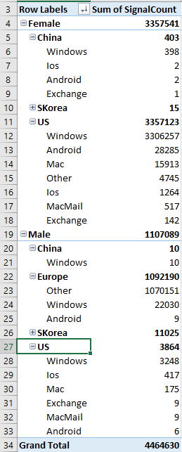
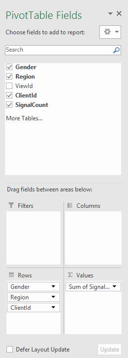

Data Analysis With Excel Pivot Table
In today's cloud computing industry, data is essential to understand your business, your customer and your system. In my experience, it usually boils down to analyzing a key performance indicator (KPI) in terms of a set of aspects. For example, I might be interested in the number of activities performed by a user, and I might want to know how that is correlated with the user's gender, region s/he lives in, and the client used.
There are many ways I can use that data. I might be interested in comparing the KPI by user gender first, then by the client types, or by the regions first, then by the genders, etc. This could all be done writing scripts. But Excel PivotTable can be handy in such scenarios.
Suppose this is my data source. And this can be the result if it's drilled down by Gender, Region, and finally Client type:

If you need a different order of drill down, or different aggregation function (e.g., averaging instead of summing), you can do so by adjusting the pivot table options:

This screencast illustrates the use of PivotTable to analyze it.
{kind=link}
It is also important to note that, the "source data" that I used here is already a digest of raw data from the enormous amount of log files from our big data system. The log files have many columns than just the few "aspects" that I mentioned earlier. It is very important to understand and plan ahead the several aspects you will be interested in analyzing, so you can use big data systems like map-reduce to cook down them into the digest. In a summary, an end-to-end workflow of analyzing big data is usually like this: